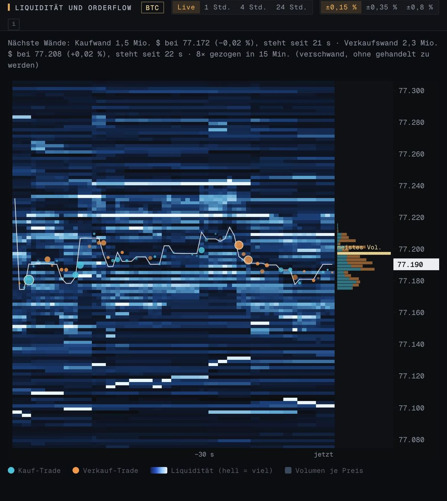

Liquidität und Wände
Wo große Aufträge im Orderbuch warten – Sekunde für Sekunde, über Bybit, OKX und Binance zusammengezählt.
- Nächste Kauf- und Verkaufswand mit Standzeit
- Gezogene Wände: verschwunden, ohne gehandelt zu werden
- Große Trades als Kreise direkt auf der Karte
